FoodMap 原始 PRD 全量自动化验收报告
通过生产构建
46/46Domain 单元测试
50 条真实扫街榜基线
71 个Workspace E2E 通过
15 张截图证据
结论
本轮结论：当前代码在本机 headless Chromium 环境下通过原始 PRD 相关的代码检视、文档一致性审计、功能主路径检查、全量 Workspace E2E、P18/P19/P20/P21 targeted gate 聚合和截图证据采集。
本轮发现并修复：一处 P21 导入路径拆分后的旧 E2E 选择器假设，以及一处 P17 详情抽屉在 1280px 桌面视口下的横向溢出风险。修复后 targeted rerun、desktop 全量 Workspace E2E 和 mobile Workspace E2E 均通过。
不做虚假验收：本项目仍是纯前端、本地优先产品。本报告不宣称账号、云同步、公网永久分享链接、后端实时 POI 搜索或无用户确认的坐标固化能力。
目标架构与当前实现
| 维度 | 目标架构 | 当前代码实现 | 本轮证据 |
|---|---|---|---|
| 产品边界 | 纯前端、本地优先；无后端依赖、无账号、无云同步、无公网永久分享链接。 | React + Vite SPA；数据保存在浏览器 IndexedDB；分享通过本地 snapshot 和 `.foodmap.json` 携带。 | 分享页只读提示、clean profile 导入和缺失快照 fallback 截图。 |
| 工作台体验 | 地图优先的个人美食地图，可导入、记录、查看、筛选、治理和分享。 | MapWorkspace、MapCanvas、PlaceDetailDrawer、HomeMapControlDock 组成工作台主路径。 |
工作台首屏、个人收藏导入、地点详情、移动端工作台截图。 |
| Domain/Repository | 地点、图层、照片、快照、治理历史经 Domain/Repository 收口，写入前保留显式确认。 | src/domain 承载位置状态、海报、治理和校准规则；src/persistence 承载 IndexedDB repository 和导入导出 codec。 |
单元测试 46/46、无效导入错误、治理工作台、只读导入路径。 |
| 分享与可携带 | 生成本地只读快照，导出完整 `.foodmap.json`，新浏览器可导入并打开只读 `#/share/:snapshotId`。 | ShareSnapshotDialog 生成摘要和导出；ImportExportDialog 分离只读导入与治理预览；ShareView 只读展示。 |
分享摘要、生成后链接、只读分享页、clean profile 导入截图。 |
| Agent 边界 | Agent 可读和辅助，但不能绕过用户确认生成分享、批量修改、删除、隐藏风险或伪造公网分享。 | FoodMapAgentBridge 对写入类和分享类动作保留受控边界；P21 negative gate 保留。 |
Targeted gate 聚合通过；P21 final acceptance 记录 Agent share/import negative。 |
自动化命令结果
| 命令或检查 | 结果 | 关键结论 |
|---|---|---|
npm run build |
通过 | TypeScript build 与 Vite production build 成功，Vite 转换 1650 个模块。 |
npm test -- --run |
通过 | src/tests/domain.test.ts 46 tests passed。 |
npm run verify:scanlist |
通过 | 真实扫街榜 baseline 通过：50 entries、50 manual overlays、38 approximate admitted pins。 |
| Workspace desktop E2E | 通过 | e2e/workspace.spec.ts --project=desktop：51 passed、5 skipped。 |
| Workspace mobile E2E | 通过 | e2e/workspace.spec.ts --project=mobile：20 passed、36 skipped。 |
| P18/P19/P20/P21 targeted gate 聚合 | 通过 | 14 passed，覆盖 P18 large deterministic、P19 viewport/data health、P20 governance/import/Agent、P21 share/import/read-only/responsive。 |
| 截图证据脚本 | 通过 | 生成 15 张 PNG；Manifest 检查无缺失、无空图；只读页交互控件负例和 clean profile 导入断言通过。 |
PRD 功能覆盖
| PRD 体验 | 当前验收判断 | 证据位置 |
|---|---|---|
| 地图优先浏览武汉美食地点 | 已覆盖 | 工作台、导入后地图、移动端工作台截图。 |
| 个人地点记录、详情、标签、评分、地址和坐标可信度 | 已覆盖 | 地点详情截图、P17 detail IA E2E、Domain 单元测试。 |
| 真实推荐参考层和本地个人数据分离 | 已覆盖 | Scanlist 真实数据校验、工作台图层入口、P18/P19 回归。 |
| 个人数据健康和治理工作台 | 已覆盖 | 数据健康中心、治理工作台截图、P20/P20-C targeted gate。 |
| 当前筛选/当前视野分享图 | 已覆盖 | 分享图 composer 截图、P19 current viewport poster targeted gate。 |
| 本地只读分享和 `.foodmap.json` 可携带 | 已覆盖 | P21 分享摘要、生成后链接、只读分享、clean profile 导入、无效导入错误截图。 |
| Agent 受控辅助，不越权写入或宣称外部实时能力 | 已覆盖 | Agent negative targeted gate、P21 final acceptance、报告边界声明。 |
文档一致性审计
| 检查点 | 处理结果 |
|---|---|
| P21 当前状态 | README 与验收门槛已改为 P21 accepted local share/data portability baseline；旧 HTML 报告已标记为历史报告。 |
| 选择器契约 | P21 contract 与 E2E matrix 已补入 import-readonly-snapshot、import-governance-preview。 |
| DB 与导出包版本 | 代码与文档区分 IndexedDB DB_VERSION = 2 和 `.foodmap.json` package version = 1。 |
| 旧审计报告 | 保留历史审计结论，但不再作为当前 P21 未验收事实来源。 |
截图证据
以下截图均来自本轮 headless Chromium 自动化访问 http://127.0.0.1:5174。个人收藏导入使用项目内置验收数据，并额外写入 4 条明确标注的自动验收样例来覆盖健康分组。
{kind=link}
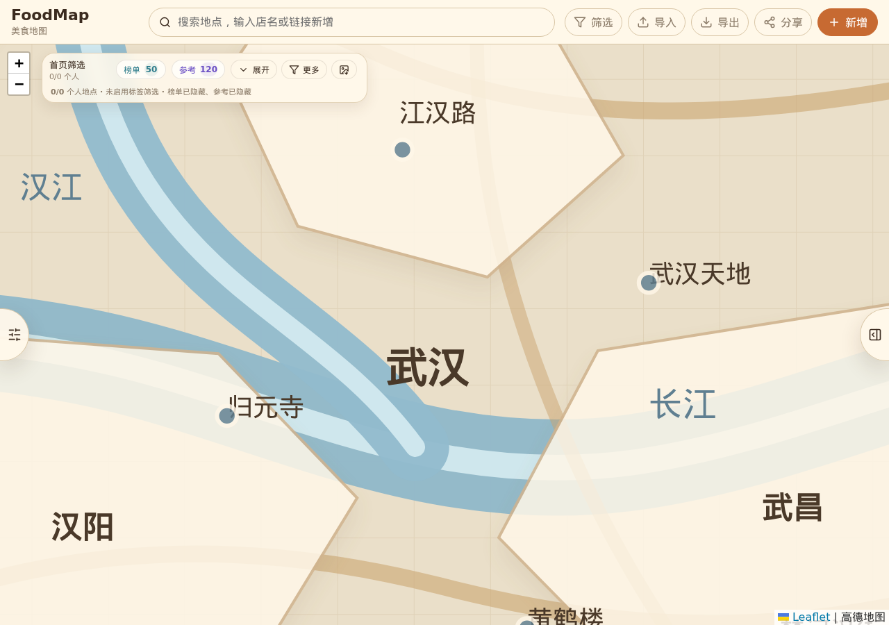
{kind=link}
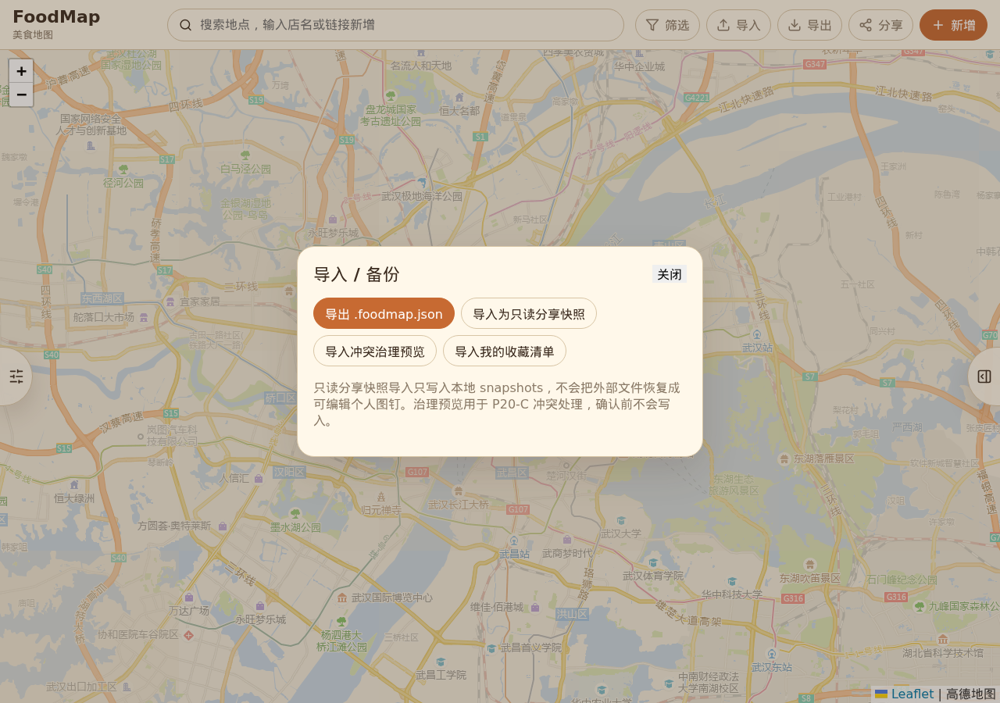
{kind=link}
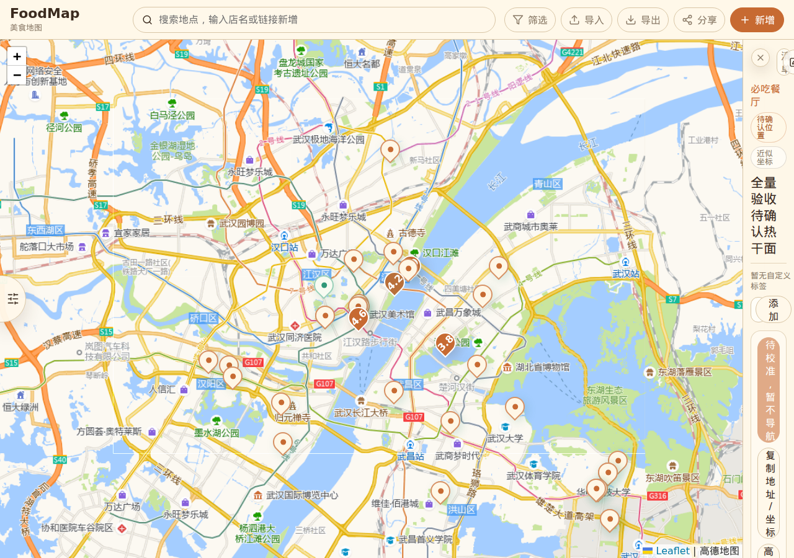
{kind=link}
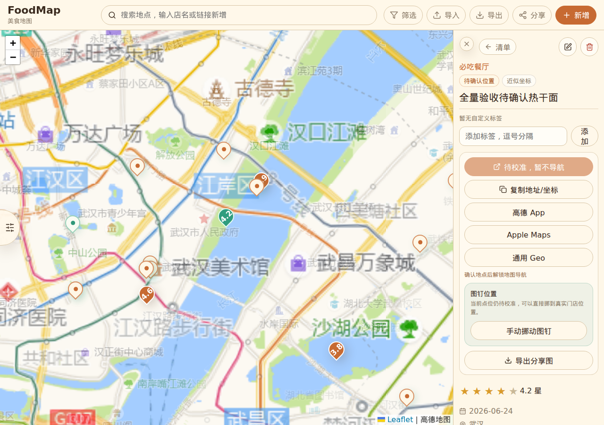
{kind=link}
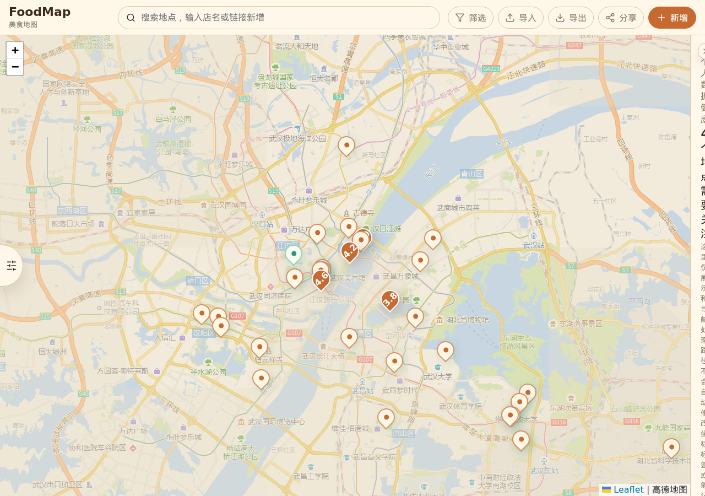
{kind=link}
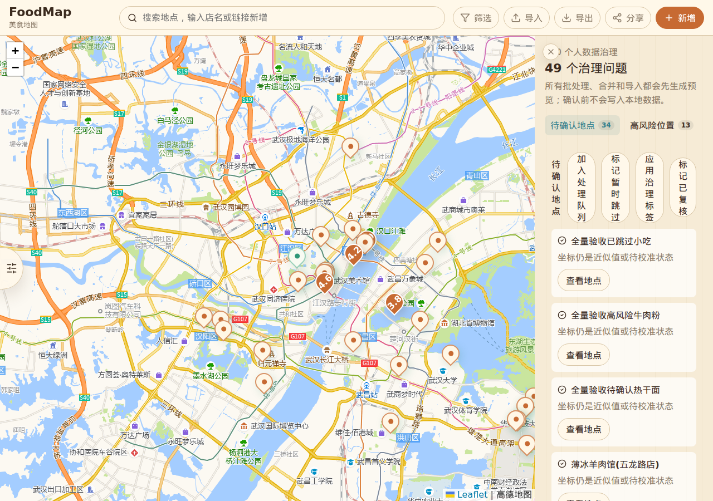
{kind=link}
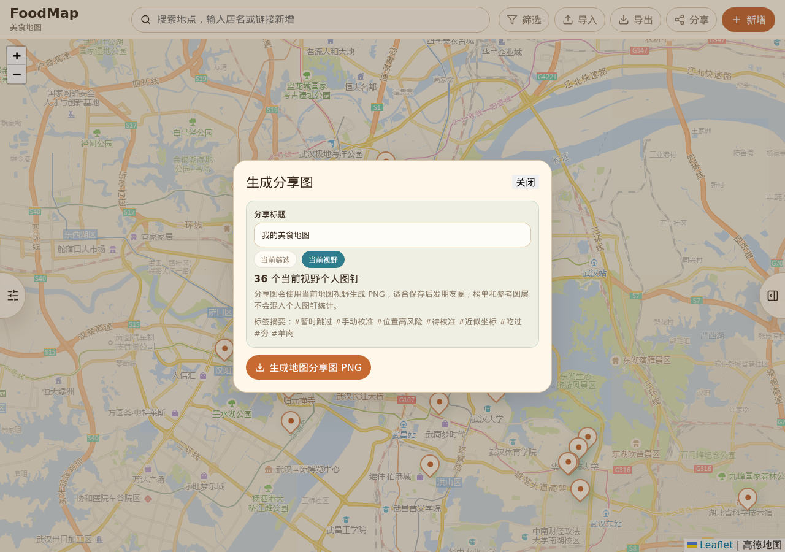
{kind=link}
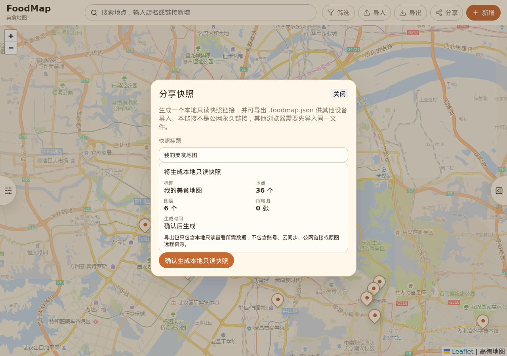
{kind=link}
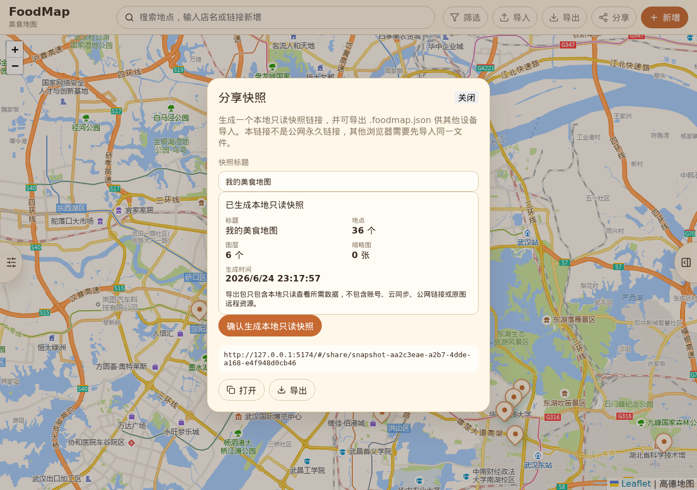
{kind=link}
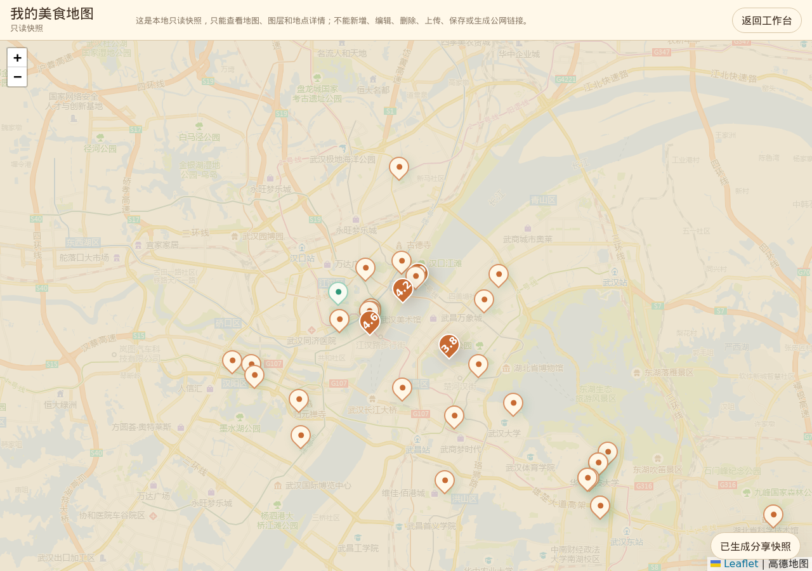
{kind=link}
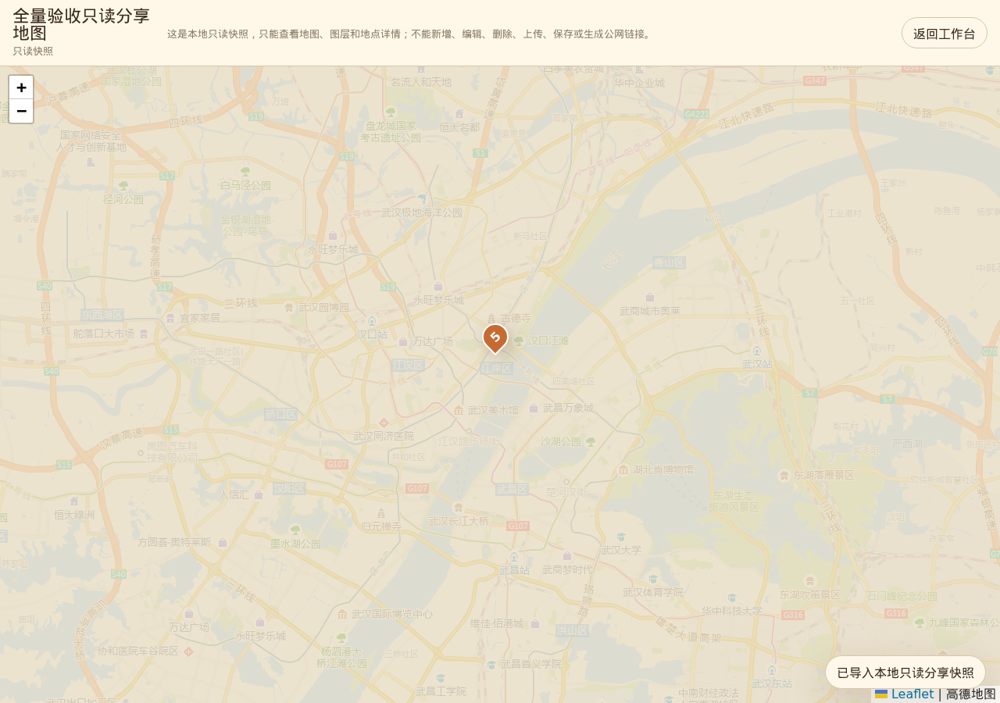
{kind=link}
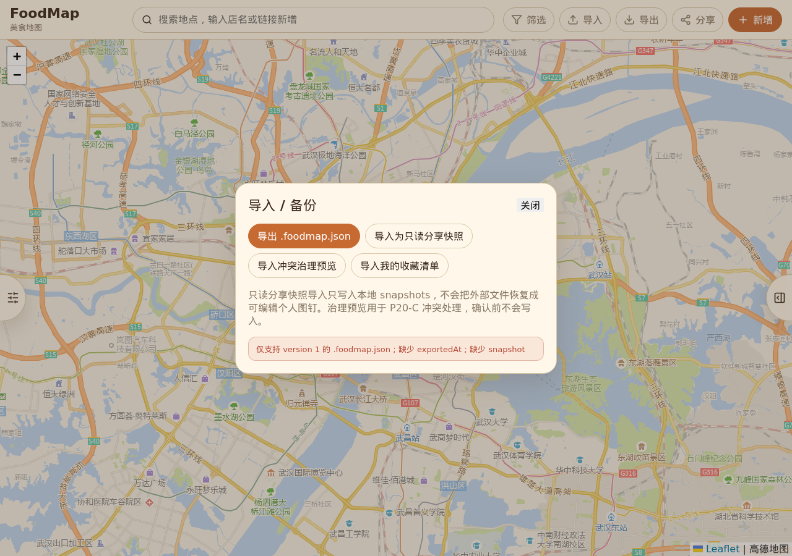
{kind=link}
{kind=link}
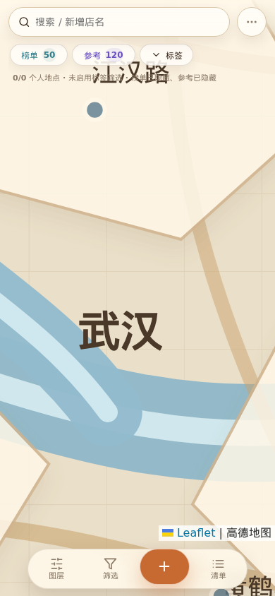
{kind=link}
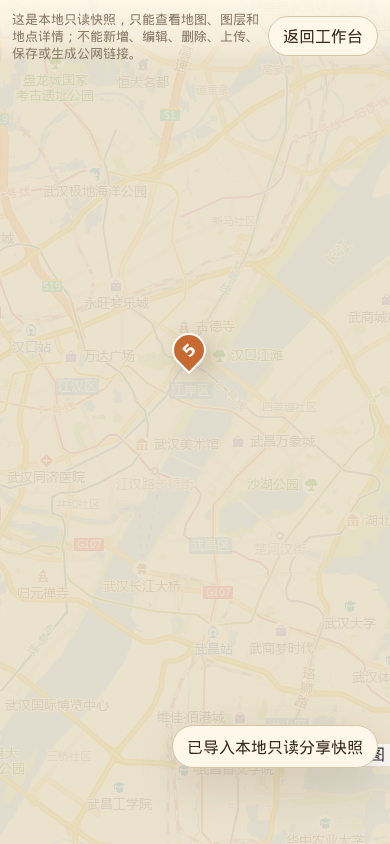
验收边界
- 本报告证明当前本机环境下的自动化路径和截图证据通过，不代表项目具备后端账号、云同步或公网永久分享能力。
- 外部实时 POI 搜索能力仍不能在无 provider key 或无 Agent evidence 时过度宣称。
- 截图脚本写入的 4 条“全量验收”样例只用于覆盖健康分组，不被描述为真实线上店铺。
- 旧历史自动化报告保留为当时证据，当前 P21 状态以 P21 final acceptance 和本报告为准。